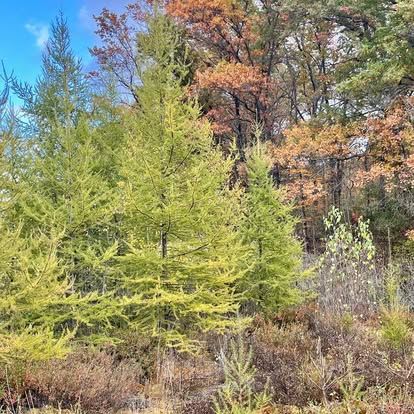

1830sNarrin settlers arrive
Our story
A working horse farm on a lake with a long memory.
Narrin Lake takes its name from the Narrin family, who settled this corner of Groveland Township in the late 1830s. Today the farm that overlooks it is a working equestrian property — and a place to slow all the way down.
Wake up to horses in the pasture and coffee on the porch. Paddle the quiet, motor-free lake. Walk the boardwalk through the tamaracks, feed the chickens, then end the day around the fire with the people you came with. Whether you're here for a weekend or a home for your horse, you're part of the farm while you're here.
- Private, spring-fed lake — no motorsports
- Hot tubs & bonfire pits
- Kayaks & fishing from the shore
- Miles of wooded hiking paths
- Horses, donkeys, cows, sheep, pigs & chickens
- 0.7 mi to Holly State Recreation Area